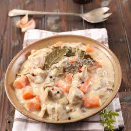

Blanquette de veau
Descritpion
La blanquette, ou blanquette de veau ou blanquette de veau à l'ancienne, est une recette de cuisine traditionnelle de cuisine française, à base de viande de veau cuite dans un bouillon avec carotte, poireau, oignon et bouquet garni, liée en sauce blanche à la crème et au beurre et aux champignons de Paris1.
Le terme « blanquette » vient de la couleur blanche de la sauce blanche à la crème et au beurre. Toutes les viandes blanches (dinde, poulet, volaille, lapin, porc), mais aussi agneau, ou poisson (lotte, daurade), peuvent se préparer « en blanquette » bien que celle de veau reste une des références culinaires de la gastronomie française.
Ingrédients
- Viande de veau
- carotte
- poireau
- oignon grelot
- champignon de Paris
- sauce blanche
Etapes
- Faire revenir la viande dans un peu de beurre doux jusqu'à ce que les morceaux soient un peu dorés.
- Saupoudrer de 2 cuillères de farine. Bien remuer.
- Ajouter 2 ou 3 verres d'eau, les cubes de bouillon, le vin et remuer. Ajouter de l'eau si nécessaire pour couvrir.
- Couper les carottes en rondelles et émincer les oignons puis les incorporer à la viande, ainsi que les champignons.
- Laisser mijoter à feu très doux environ 1h30 à 2h00 en remuant.
- Si nécessaire, ajouter de l'eau de temps en temps.
- Dans un bol, bien mélanger la crème fraîche, le jaune d’oeuf et le jus de citron. Ajouter ce mélange au dernier moment, bien remuer et servir tout de suite.
page principale